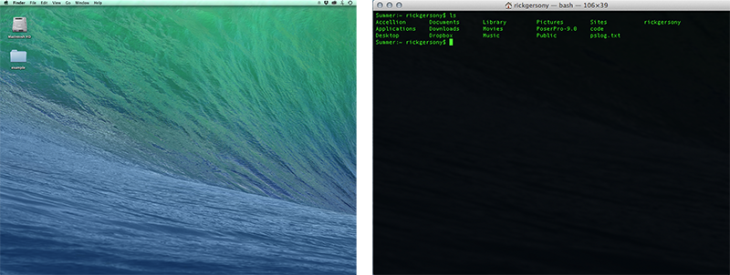
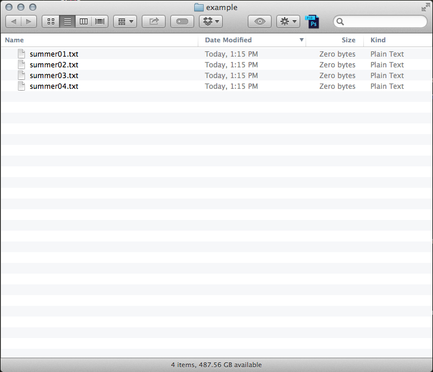
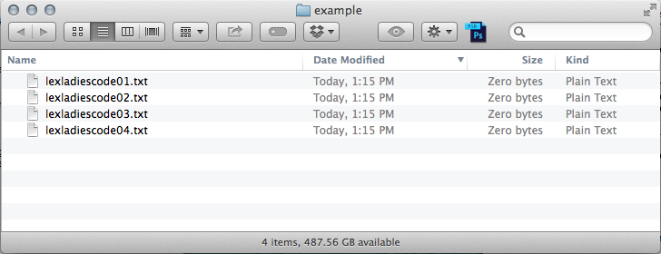

The Command Line
What is it? Should I use it?
Created by Summer Smith for LexLadiesCode
Your Computer can be shown in different ways
GUI vs Command Line
- The GUI (graphical user interface) is your basic desktop where you click, drag, and folders are represented visually
- The command line is a way of accessing your computer that only uses text

Benefits of the Command Line
- Access to functions you don’t have in the GUI
- Do things more quickly
- Automation: if you find yourself doing the same thing more than 5x, you can do it faster in the terminal
- Required by some applications
- Look like a totally sweet hacker
How to I get to it?
Mac: Applications>Utilities>Terminal
Tip: Drag the application to your dock for quick access
Windows: Start>Accessories>Windows PowerShell
Note: Windows Powershell uses a different set of commands, but is just as powerful as a Unix/Mac command line
Wait, Can’t I Totally Mess My Computer Up?
Totally! You'd really have to try, though.
The command line is the barest bones of your computer: if you tell it to do something, it does it.
How Do I Command Line?
Anatomy of a Command Line Query
Command line queries look long and complicated, but are made of a few simple parts:
- Commands (Verbs)
- Arguments or Flags (adjectives/adverbs)
- File or folder names of what you want to change (nouns)
Let's Do It
Navigation
Without a mouse to click, you have to navigate by hopping up and down the file structure using a few commands.
- ls: List the folders in the current directory
- cd: Change Directory
- cd needs to be modified by telling it what directory to go to
- Use "cd .." to hop up to the directory above the current one
- Use the tab key to automatically fill in
We're There, Now What?
Once you've made it to the folder or files you want to modify, what can you do with it?
- Batch editing: many programs support use of the command line to edit multiple files at the same time
- Change preferences for how your computer looks or behaves: reveal hidden files, for example
- Check on things your computer is doing in the background
Let's batch edit some filenames!
for file in *.txt
do mv “$file” “${file//summer/lexladiescode}”
done

But how does it work?
for file in *.txt
means "every file in this folder that ends in .txt"
mv
means "overwrite this filename"
“$file” “${file//summer/lexladiescode}”
means change any part of the filename that says 'summer' to say 'lexladies'

Some other things I have used the command line for recently…
- Convert a folder of .docx to .doc without opening Word
- Resizing a whole folder of images usings "sips" - an OSX utility (command line program)
- Fixing permissions on my dropbox
- Revealing hidden files on my Mac
- Flushin’ my cache (deleting internet history)
- Ping www.google.com for checking if the internet is down
- Homebrew to install programming languages
How did you learn how to do all this?
Google! If something seems like a big hassle in the GUI, asking Google if there's a way to do it in the command line is a good start.
Basic commands, like LS or CD, are easy to remember. Longer ones I need to look up.